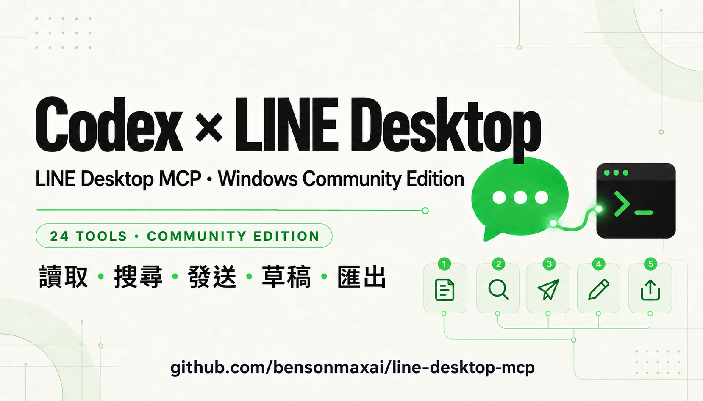

Threads｜Benson 李培正：Codex × LINE Desktop MCP Windows 社群版

一句話摘要
這個開源專案把已登入的 Windows LINE Desktop 接成 MCP server，讓 Codex 能在受控範圍內讀取聊天、搜尋訊息、準備草稿、發送回覆與匯出紀錄；它的價值不只是「LINE 有 MCP」，而是把 AI agent 接到既有桌面工作流，同時保留草稿與確認邊界。
來源脈絡
| 欄位 | 內容 |
|---|---|
| Threads 原始分享 | https://www.threads.com/share/_-Ufn_qJC/ |
| Canonical Threads | https://www.threads.com/@benson.pcl/post/DdHJL3So6Pq |
| 作者 | Benson 李培正（@benson.pcl） |
| GitHub 專案 | https://github.com/bensonmaxai/line-desktop-mcp |
| 專案型態 | fork 自 dtwang/line-desktop-mcp 的 Windows 社群版 |
| 最新 Release | v1.2.0，2026-09-10 發布 |
| GitHub 狀態 | 公開、MIT License、62 stars、16 forks（2026-09-11 擷取） |
| Threads 顯示 | 約 1.3 萬次瀏覽、190 個心情、20 則回覆、34 次引用、417 次分享 |
Threads 貼文重點
作者表示，這套 Codex × LINE 工具已經使用一段時間，現在整理成公開專案。Threads 提到的能力包括：
- 讀取指定聊天室。
- 搜尋訊息。
- 發送回覆。
- 管理草稿。
- 將聊天紀錄匯出成 TXT、JSON、CSV。
- Windows 擴充版提供 24 個工具。
- 專案宣稱本次發布的 93 項自動測試全部通過。
留言中作者補充：自己已使用約 2 至 3 個月；最高一次約向 20 位對象發送不同內容。作者也說明，LINE Official Account 可直接串官方 API，但一般個人帳號沒有同等 API，因此採用 MCP 連接桌面版。
GitHub README 核對結果
### 專案定位
GitHub README 將它定位為 Codex × LINE Desktop 的 Windows 社群版，透過已登入的 LINE Desktop 與 MCP，讓 Codex 協助處理聊天內容、回覆與工作紀錄。專案明確聲明：與 LINE 官方無關。
這是一個 fork：
### 5 個預設工具與 24 個擴充工具
README 說明，預設保留原本的 5 個工具；Windows 設定 `LINE_MCP_EXTENSIONS=1` 後，可啟用 24 個工具。部分介面操作還需要相容的 CUA Driver，macOS 維持原本介面，這次擴充的驗證重點是 Windows。
主要工具類別包括：
- 記錄與搜尋：讀取聊天歷史、搜尋、文字存在驗證、匯出。
- 能力與狀態：查看可用能力、工作流、LINE 狀態與 UI 狀態。
- 草稿與傳送：讀取、寫入、清除草稿；手動或自動發送文字；準備檔案傳送。
- 訊息操作：準備回覆、複製、翻譯、轉傳與開啟聊天室功能。
### 安裝前提
README 列出的 Windows 前置需求：
- 已登入的 Windows LINE Desktop。
- Node.js。
- AutoHotkey v2。
- 若要使用 UI 工具，另需相容的 CUA Driver。
範例設定會啟用擴充工具並指定 CUA Driver：
```powershell
codex mcp add line-desktop-mcp `
--env LINE_MCP_EXTENSIONS=1 `
--env LINE_MCP_CUA_DRIVER=C:/Tools/cua-driver/cua-driver.exe `
--node C:/Tools/line-desktop-mcp/src/server.js
```
實際使用時，路徑必須換成自己的絕對路徑；加入後可先呼叫 `get_line_capabilities`，確認工具與能力，不會先讀取聊天內容。
### 測試與驗證範圍
GitHub README 宣稱 `npm test` 有 93 項測試通過，涵蓋：
- MCP 協定相容性。
- 訊息篩選與匯出。
- 草稿與視窗保護。
- AutoHotkey 產生。
- 跨程序鎖。
- 無互動啟動。
README 也列出驗證環境為 Node.js 24.16.0、Windows LINE 26.4.2.3957、CUA Driver 0.23.2。這些是作者的驗證環境，不代表所有 Windows、LINE 或 Codex 版本都相容。
它如何運作
```text
Codex
↓ MCP
LINE Desktop MCP
├─ AutoHotkey：受範圍限制的記錄讀取
├─ CUA Driver：視窗與介面操作
└─ Windows 本機 OCR
↓
已登入的 Windows LINE Desktop
```
README 表示 OCR 在本機執行，不使用雲端 OCR；但 AI 客戶端如何處理工具回傳內容，仍取決於客戶端與模型設定。這代表「本機 OCR」不等於整個工作流必然不會把聊天內容送到雲端模型，使用前仍要檢查 Codex 與 MCP client 的資料處理方式。
對欒帥現有 Hermes 工作流的意義
這個專案與目前的 Hermes、Codex、LINE 自動回覆與知識庫工作流高度相關，但定位不同：
- LINE Official Account：適合官方帳號的 Messaging API、Webhook 與正式自動化。
- LINE Desktop MCP：適合個人帳號或桌面端已載入內容的輔助操作。
- Hermes：可再透過 MCP、檔案與流程治理，把讀取、摘要、草稿、人工確認與知識庫歸檔串起來。
較安全的導入順序是「讀取 → 搜尋 → 摘要 → 產生草稿 → 人工確認 → 發送」，而不是一開始就開啟自動發送。
導入檢核表
- 先固定使用 v1.2.0，不要直接依賴未審查的 `latest`。
- 先只啟用讀取、搜尋、匯出與草稿工具，確認資料範圍。
- 建立測試聊天室與假資料，先驗證讀取、搜尋、草稿與匯出。
- 自動發送前，保留 `send_message_manual` 或等價的草稿確認流程。
- 對群組訊息、個資、課程私密資料與 LINE 聯絡人內容，設定明確不可讀取或不可外傳的範圍。
- 匯出 TXT／JSON／CSV 後檢查檔案權限與保存位置，避免聊天紀錄被其他帳號讀取。
- 不要把「文字存在驗證」當成送達證明；README 也說它只能確認指定範圍內存在相同文字。
- UI 操作遇到無法辨識的控制項時要停止，不要讓 agent 猜座標繼續執行。
- 注意 fork 專案的更新來源、上游變更、依賴與 Windows LINE 版本相容性。
限制與安全邊界
- 這是社群 fork，不是 LINE 官方產品或官方背書的 MCP。
- 記錄讀取受限於 LINE Desktop 當下已載入的內容；匯出檔不能還原成 LINE 帳號備份。
- 引用回覆、複製、翻譯、轉傳與附件功能尚未代表所有客戶端都完成實機驗證。
- 自動發送、檔案傳送與轉傳都可能產生不可逆的外部副作用，應預設人工確認。
- 「93 項測試全數通過」是 README 與作者發布的專案聲明；測試使用合成訊息與模擬介面，不等於已驗證所有真實聊天室情境。
- README 的 24 工具、Windows 版本、Node.js 與 CUA Driver 版本都可能隨 release 變動；使用前應查看最新 release 與文件。
原始與官方參考
Threads 原文：
https://www.threads.com/share/_-Ufn_qJC/
Canonical Threads：
https://www.threads.com/@benson.pcl/post/DdHJL3So6Pq
GitHub 專案：
https://github.com/bensonmaxai/line-desktop-mcp
v1.2.0 Release：
https://github.com/bensonmaxai/line-desktop-mcp/releases/tag/v1.2.0
上游專案：
https://github.com/dtwang/line-desktop-mcp
MCP 官方入門：